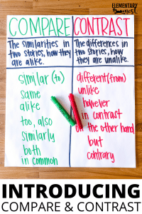
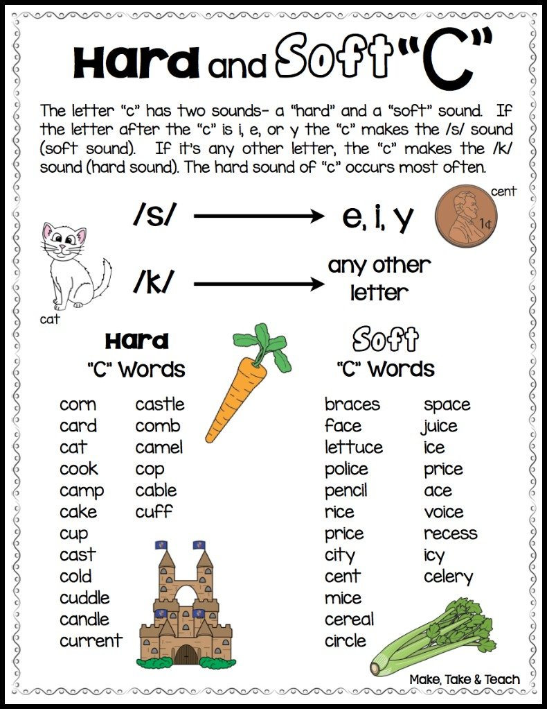
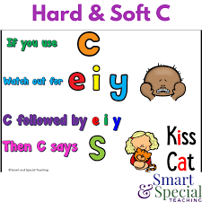
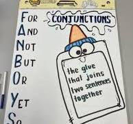
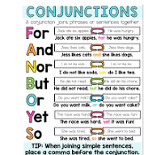

🌍 Week 12 of 35 — Unit 3: Global Goods
Week #: 12 of 35 (Unit 3, week 2 of 5) Dates: Nov 22 – Nov 26, 2026 | Unit: Unit 3: Global Goods | |
Unit Padlet
Reading (Comprehension Strategies)
Grammar (Advanced Punctuation and Style)
Practice Websites
Grammar Quest - Daily Oral Language
Maths Quest Pro - Master Your Math Facts!
Extra Math Resources
Unit 1: Math (Place Value and Operations)
Unit 2: Math (Measurement and Data)
Unit 4: Math (Multiplication and Division)
Unit 6: Math (Algebra, FDP, Fractions)
Class | Sunday | Monday | Tuesday | Wednesday | Thursday |
This week's updates / notes: | Some lessons have been transferred over from the previous week due to time. Tue: 5B’s SEL Lesson with Hilton Wed: 5A’s SEL Session · G5 Science Fair 9:40-10:30 Grey italic text = added in the October 2026 template update (not in the original plan). | No notes for this day. | No notes for this day. | No notes for this day. | No notes for this day. |
Morning Meeting / SEL | Week #7 SEL Lesson - Decide which day you prefer to do this lesson. THEME: KINDNESS 5A- Individual Activity to Whole Group Meeting 5B- One to One Enrichment 5C- Morning Worksheets SEL - Kindness | Awsaj Showtime Practice - 5A with Ms. Anita Week #7 SEL Lesson - Decide which day you prefer to do this lesson. THEME: KINDNESS 5A- Individual Activity to Whole Group Meeting 5B- One to One Enrichment 5C- Morning Worksheets SEL - Kindness | Awsaj Showtime Practice - 5C with Ms. Anita Week #7 SEL Lesson - Decide which day you prefer to do this lesson. THEME: KINDNESS 5A- Individual Activity to Whole Group Meeting 5B- One to One Enrichment 5C- Morning Worksheets SEL - Kindness | Awsaj Showtime Practice - 5B with Ms. Anita Week #7 SEL Lesson - Decide which day you prefer to do this lesson. THEME: KINDNESS 5A- Individual Activity to Whole Group Meeting 5B- One to One Enrichment 5C- Morning Worksheets SEL - Kindness | Week #7 SEL Lesson - Decide which day you prefer to do this lesson. THEME: KINDNESS 5A- Individual Activity to Whole Group Meeting 5B- One to One Enrichment 5C- Morning Worksheets SEL - Kindness |
Literacy: Vocabulary & Spelling Standards | CC L.5.4, L.5.6 · EE.L.5.4, EE.L.5.6 | CC L.5.4, L.5.6, L.5.2.E, RF.5.3 · EE.L.5.4, EE.L.5.6, EE.L.5.2.H, EE.RF.5.3 | CC L.5.4, L.5.6 · EE.L.5.4, EE.L.5.6 | CC L.5.4, L.5.6 · EE.L.5.4, EE.L.5.6 | CC L.5.4, L.5.6, L.5.2.E, RF.5.3 · EE.L.5.4, EE.L.5.6, EE.L.5.2.H, EE.RF.5.3 |
Literacy: Vocabulary & Spelling Activities/Tasks (Differentiation) Routine: give the definition first (no guessing) → students share where they might use it, similar/different words. Morphology, examples/non-examples, synonyms/antonyms & more on the vocabulary cards: Vocabulary Padlet (incl. Spelling: words Mon · test Thu) | G5: moreover — In addition; besides; what is more. G3: stride — A long, decisive step taken when walking or running. Unit: prior — Existing or coming before in time or order. | G5: hence — As a consequence; for this reason; therefore. G3: obstacle — Something that blocks your path or makes it difficult to move forward. Unit: emphasize — To give special importance or attention to something. Spelling — introduce Week 12 lists (practice all week). Low (Building Spelling Skills, List 12): candy, went, sent, take, like, puppy, time, didn't, by, my High (Building Spelling Skills, List 12): anyone, however, everything, himself, birthday, herself, somewhere, afternoon, chalkboard, daydream, downstairs, grandparents, breakfast, outfield, scarecrow, nobody, dragonfly, keyboard | G5: thereby — By that means; as a result of that. G3: tremendous — Extremely large, great, or powerful in amount or degree. Unit: concise — Giving information clearly using only a few words. | G5: alternatively — As another choice or possibility; on the other hand. G3: ample — More than enough; plenty of something. Unit: explicit — Stated clearly and in detail, leaving no room for confusion or doubt. | G5: regardless — Without paying attention to the present situation; despite the prevailing circumstances. G3: alert — Quick to notice and respond to things happening around you. Unit: milestone — An important event or achievement that marks a significant stage in development. |
Literacy: Vocabulary & Spelling Assessment (Differentiation) | Quick check: Use today's word in a spoken or written sentence. Low: match the word to a picture or definition. Mid: complete a sentence frame. High: write an original sentence. | Quick check: Use today's word in a spoken or written sentence. Low: match the word to a picture or definition. Mid: complete a sentence frame. High: write an original sentence. | Quick check: Use today's word in a spoken or written sentence. Low: match the word to a picture or definition. Mid: complete a sentence frame. High: write an original sentence. | Quick check: Use today's word in a spoken or written sentence. Low: match the word to a picture or definition. Mid: complete a sentence frame. High: write an original sentence. | Spelling test — Week 12 lists (Low: List 12 · High: List 12). |
Literacy: Reading Standards | CC RF.5.3, RL.5.2 · EE.RF.5.3, EE.RL.5.2 | CC RL.5.2, RL.5.9 · EE.RL.5.2, EE.RL.5.9 | CC RF.5.3, RL.5.2, RL.5.9 · EE.RF.5.3, EE.RL.5.2, EE.RL.5.9 | CC RL.5.2, RL.5.9 · EE.RL.5.2, EE.RL.5.9 | CC RL.5.2, RL.5.9 · EE.RL.5.2, EE.RL.5.9 |
Literacy: Reading Activities/Tasks (Differentiation) | Guided Reading: BrainpopJr. - Compare and Contrast Warm-Up (3 min): Ask students: What is a theme? Write down responses. Share a definition: A theme is the big idea or lesson in a story. Lesson (9 min): Read "The Tortoise and the Hare" aloud. Ask students: What lesson can we learn from this story? Guide them to identify the theme (e.g., perseverance, hard work). Write the theme on the board and discuss how the events in the story support it. Wrap-Up (3 min): Have students share one other story or movie they know and its theme (e.g., "Cinderella" = kindness is rewarded).  Rotations: SeeSaw: Create Simile and Metaphor · Sort Similes/Metaphors · Metaphors · Smilies and Metaphors · Character/Setting Review IXL: G3 Meanings of Simile · G4 Simile and Metaphors · G4 Meanings (Similes/Metaphors) · G4 Idiom Meaning Google Classroom: Folder · Boom Cards: Here · RazKids, EPIC, Book Bag · Writing station Kahoot: Figurative Language · Similes and Metaphors Phonics: Soft c: /s/. Teach that when the letter c is next to i, e, or y, it usually makes the soft sound. Twinkl PPT for teaching   Decodable text hub (find soft c passage) · Hard or soft c worksheet OR: Read and match the picture SeeSaw (easy) · Hard or soft c word sort SeeSaw · Hard or soft c picture sort SeeSaw · Soft c crossword! · Twinkl pack of activities (including roll and read and wordsearch!) | Guided Reading: Compare themes (e.g., "The Tortoise and the Hare" and "The Lion and the Mouse") - Text in the FOLDER Warm-Up (3 min): Review: Ask, What is a theme? and list examples from yesterday. Introduce today’s goal: We will compare themes in two stories. Lesson (9 min): Briefly read "The Lion and the Mouse" aloud. Identify its theme (e.g., kindness is powerful, even small help can make a difference). Compare it with "The Tortoise and the Hare" using a Venn diagram. Differences: themes are perseverance vs. kindness. Similarities: both teach life lessons and involve animals. Wrap-Up (3 min): Ask: Can two different stories have the same theme? Why or why not? Rotations: See list from Sunday or the differentiation section below. | Guided Reading: (e.g., "The Boy Who Cried Wolf" and "The Ant and the Grasshopper") or Text in the FOLDER Warm-Up (3 min): Review Venn diagram from Day 2. Ask: What do we mean when we contrast something? Lesson (9 min): Read "The Boy Who Cried Wolf" and discuss its theme (e.g., honesty is important). Contrast it with "The Ant and the Grasshopper" (theme: hard work pays off). Guide students to write or share contrasting sentences using the sentence stems (e.g., "The theme of ___ is different from ___ because..."). Wrap-Up (3 min): Ask: Why do you think authors write stories with different themes? Rotations: See list from Sunday or the differentiation section below. Phonics: Introduce digraphs th/ch/sh/ph/wh (choose a resource): Brainpop JR digraphs (3 videos) · Twinkl PPT Extra resources for week: Digraph write the room · Cut out and fold dice, roll and write digraph game · Underline the digraph SeeSaw · Decodable text hub · Word search · Th and wh crossword | Guided Reading: (e.g., "The Ugly Duckling" and "Pinocchio") - Text in the FOLDER Warm-Up (2 min): Briefly review how to find themes and compare/contrast them. Lesson (10 min): Distribute stories and graphic organizers. In pairs or individually, students read the stories and identify their themes. Students use the graphic organizer to compare and contrast the themes. Wrap-Up (3 min): Invite students to share their findings with the class. Conclude: What did we learn about themes this week? Rotations: See list from Sunday or the differentiation section below. | Guided Reading: Review/Catch-up Rotations: See list from Sunday or the differentiation section below. |
Literacy: Reading Assessment (Differentiation) | Informal Assessments in class and SeeSaw/IXL (See Above) | Informal Assessments in class and SeeSaw/IXL (See Above) | Informal Assessments in class and SeeSaw/IXL (See Above) | Informal Assessments in class and SeeSaw/IXL (See Above) | Exit check: read a short fable, name its theme and one detail that shows it. Low: choose the theme from 2 picture/word options. Mid: use the frame 'The theme is ___ because ___.' High: compare it with another fable's theme in 2 sentences. |
Literacy: Writing / Language Standards (Language Sun & Tue · Writing Mon & Wed · Thu catch-up) | CC L.5.2.C · EE.L.5.2.E | CC W.5.1, W.5.1.B · EE.W.5.1, EE.W.5.1.B | CC L.5.2.D · EE.L.5.2.F | CC W.5.1, W.5.1.B, W.5.1.D · EE.W.5.1, EE.W.5.1.B, EE.W.5.1.D | CC L.5.2.C, L.5.2.D, W.5.1 · EE.L.5.2.E, EE.L.5.2.F, EE.W.5.1 |
Literacy: Writing / Language Activities/Tasks (Differentiation) IXL this week: Low: Use contractions with "not" (G2) High: Pronoun-verb contractions (G3) Stretch: Capitalizing titles (G4) · Punctuating dialogue (G5) | Grammar (Sun) — Colons & Semicolons OBJ: Use colons to introduce lists; semicolons to join related clauses Packets — Low (K-1): K: L3.8 Short Vowel Sounds, K: Review: Vowel Sounds, G1: Review — Plurals and Suffixes (teacher intro colons in lists) · Mid (2-3): G2: Review — Commas and Apostrophes (teacher intro colons), G3: Review — Punctuating Dialogue and Titles (no G3 colon lesson) · High (4-6): G4: L2.12 Colons, G4: Review: Dialogue/Titles/Colons, G5: L2.17 Colons, G5: L2.18 Semicolons, G6: L2.15 Colons, G6: L2.16 Semicolons K: phonics supplement. Grammar anchor charts / resources (from the 2025-26 plan): Brainpop:   Moved here from Reading: | Writing — Three DIFFERENT reasons for one opinion Warm-up Debatable Idea: "Are video games bad for kids?" Revisit the Needs & Wants worksheet; model brainstorming three different reasons ("Should everyone have the same things?") with the reason word bank; partners rehearse orally, then list reasons on the organizer. Grammar link: adjectives make a reason more convincing. TWR: three DIFFERENT because-sentences + distinctness check — partners ask: three different reasons, or one reason said three ways? Resources: Needs & Wants worksheet (Padlet Wk 1) — IXL: Choose Reasons to Support an Opinion (G5) — word bank: because, also, another reason IXL: Complete the opinion passage with a reason (G2) — Choose reasons (G3) — Stretch: G4 | Grammar (Tue) — Hyphens & Parentheses OBJ: Use hyphens in compound words; parentheses for supplementary info Packets — Low (K-1): K: L4.2 Prefixes, K: L4.3 Suffixes, K: L4.4 Rhyming Words, K: Review: Plurals/Prefixes/Suffixes/Rhyming, G1: Review — Pronouns I and Me · Mid (2-3): G2: Review — Quotation Marks and Titles, G3: Review — Capitalization · High (4-6): G4: Review — End Marks and Abbreviations, G5: L2.19 Hyphens, G5: L2.20 Parentheses, G5: Review: Ch. 2 Lessons 8-20, G6: L2.17 Hyphens, G6: L2.18 Parentheses, G6: Review: Lessons 7-18 K: prefixes/suffixes build word-construction awareness. | Writing — Write a full opinion paragraph Warm-up Debatable Idea: "What is climate change, and should we act on it?" Model turning three reasons into a paragraph: opinion statement, three reasons in order, closing sentence; students write theirs on needs vs wants with starters ("In my opinion... First... Also... Another reason..."). TWR: write the paragraph FROM the outline — topic sentence, one sentence per reason jot, concluding sentence; tick each jot as it becomes a sentence. Mentor: I Wanna Iguana — read-aloud — tally Alex's reasons and check each has a "because." Differentiation: Low/Med paragraph frame with a starter per reason; High adds linking words (however, in addition). Resources: Needs & Wants worksheet (Padlet Wk 1) | Catch-up day — reteach or extend this week's grammar and writing; finish unfinished drafts; assign this week's IXL practice (links in the left column: Low = reteach, High = consolidate, Stretch = extension). |
Literacy: Writing / Language Assessment (Differentiation) | Exit check: write one sentence that uses a colon to introduce a list and one that uses a semicolon to join two related ideas. Low: add the missing colon or semicolon to 3 teacher sentences. Mid: complete sentence frames. High: write both sentences independently about goods Qatar trades. | Writing check: Check today's writing against the co-built rubric (one target from today's lesson). Low: oral rehearsal first, then a sentence frame or labelled picture. Mid: word bank and a partner check. High: independent, plus one stretch goal. | Exit check: add hyphens to 3 compound words (e.g. well-known) and add parentheses around extra information in 2 sentences. Low: choose the correct version from two options with teacher support. Mid: fix teacher sentences using the packet rule card. High: write 2 original sentences, one with a hyphen and one with parentheses. | Writing check: Check today's writing against the co-built rubric (one target from today's lesson). Low: oral rehearsal first, then a sentence frame or labelled picture. Mid: word bank and a partner check. High: independent, plus one stretch goal. | Catch-up check: Check IXL SmartScores on this week's language skills and conference with 2 to 3 writers on unfinished drafts. |
Math Standards (pacing W11, from the Awsaj Math Curriculum) | STANDARD 1. Multiply fractions by fractions: 5.NF.B.4 2. Divide a fraction by an integer: 5.NF.B.7 3. Divide any fraction by an integer: 5.NF.B.7 4. Mixed questions with fractions: 5.NF.B.6 | PRIORITY 1. Multiply fractions by integers: 5.NF.B.4 2. Multiply fractions by fractions: 5.NF.B.4 3. Divide a fraction by an integer: 5.NF.B.7 4. Divide any fraction by an integer: 5.NF.B.7 | INTERVENTION 1. Multiply fractions by integers: 5.NF.B.4 2. Multiply fractions by fractions: 5.NF.B.4 3. Divide a fraction by an integer: 5.NF.B.7 | ||
Math Activities/Tasks (Differentiation) Pacing W11 · B4 Fractions B W10–W12 | STANDARD · ~4 new / wk 1. Multiply fractions by fractions 5.NF.B.4 ▶ VIDEO · GUIDE · SLIDES · PPT · LESSON · SHEET · DISPLAY · ANSWERS · T/F · PRE-TEACH · TA SHEET · TA ANS · TRANSCRIPT 2. Divide a fraction by an integer 5.NF.B.7 ▶ VIDEO · GUIDE · SLIDES · PPT · LESSON · SHEET · DISPLAY · ANSWERS · T/F · PRE-TEACH · TA SHEET · TA ANS · TRANSCRIPT 3. Divide any fraction by an integer 5.NF.B.7 ▶ VIDEO · GUIDE · SLIDES · PPT · LESSON · SHEET · DISPLAY · ANSWERS · T/F · PRE-TEACH · TA SHEET · TA ANS · TRANSCRIPT 4. Mixed questions with fractions 5.NF.B.6 ▶ VIDEO · GUIDE · SLIDES · PPT · LESSON · SHEET · DISPLAY · ANSWERS · T/F · PRE-TEACH · TA SHEET · TA ANS · TRANSCRIPT 1× support block — pick from the panel below Differentiation: Each lesson includes partner practice, common misperceptions independent practice, and a challenge questions for differentiation. | PRIORITY · ~3 new / wk 1. Multiply fractions by integers 5.NF.B.4 ▶ VIDEO · GUIDE · SLIDES · PPT · LESSON · SHEET · DISPLAY · ANSWERS · T/F · PRE-TEACH · TA SHEET · TA ANS · TRANSCRIPT 2. Multiply fractions by fractions 5.NF.B.4 ▶ VIDEO · GUIDE · SLIDES · PPT · LESSON · SHEET · DISPLAY · ANSWERS · T/F · PRE-TEACH · TA SHEET · TA ANS · TRANSCRIPT 3. Divide a fraction by an integer 5.NF.B.7 ▶ VIDEO · GUIDE · SLIDES · PPT · LESSON · SHEET · DISPLAY · ANSWERS · T/F · PRE-TEACH · TA SHEET · TA ANS · TRANSCRIPT 4. Divide any fraction by an integer 5.NF.B.7 ▶ VIDEO · GUIDE · SLIDES · PPT · LESSON · SHEET · DISPLAY · ANSWERS · T/F · PRE-TEACH · TA SHEET · TA ANS · TRANSCRIPT 1× support block — pick from the panel below Differentiation: Each lesson includes partner practice, common misperceptions independent practice, and a challenge questions for differentiation. | INTERVENTION · ~2 new / wk 1. Multiply fractions by integers 5.NF.B.4 ▶ VIDEO · GUIDE · SLIDES · PPT · LESSON · SHEET · DISPLAY · ANSWERS · T/F · PRE-TEACH · TA SHEET · TA ANS · TRANSCRIPT 2. Multiply fractions by fractions 5.NF.B.4 ▶ VIDEO · GUIDE · SLIDES · PPT · LESSON · SHEET · DISPLAY · ANSWERS · T/F · PRE-TEACH · TA SHEET · TA ANS · TRANSCRIPT 3. Divide a fraction by an integer 5.NF.B.7 ▶ VIDEO · GUIDE · SLIDES · PPT · LESSON · SHEET · DISPLAY · ANSWERS · T/F · PRE-TEACH · TA SHEET · TA ANS · TRANSCRIPT 2× support block — pick from the panel below Differentiation: Each lesson includes partner practice, common misperceptions independent practice, and a challenge questions for differentiation. | ||
Math: Support Block Activities/Tasks (pick one) | Rec/PK4 · Compare amounts · Rec/PK4 · Doubles to 10 (make a double) · Y1/KG · Number bonds to 10 · Y2/Gr.1 · Count in 3s · Y2/Gr.1 · Find the whole · Y3/Gr.2 · Compare numbers to 1,000 · Y3/Gr.2 · Scaling · Y4/Gr.3 · Correspondence problems · Y5/Gr.4 · Find fractions equivalent to a unit fraction · Y5/Gr.4 · Recognise equivalent fractions · Y5/Gr.4 · Add and subtract fractions with the same denominator · Y5/Gr.4 · Add fractions within 1 · Y5/Gr.4 · Multiply a unit fraction by an integer · Y5/Gr.4 · Multiply a non-unit fraction by an integer · Y5/Gr.4 · Use fractions as operators | ||||
Math Assessment (Differentiation) | Pre-check: Quick pre-check on this week's skills (IXL formative pre-test or 3 questions from the first lesson). | Exit check: 2 to 3 questions from each strand's SHEET or T/F slide at the end of the lesson. Intervention: with the TA sheet and concrete materials. Priority: partner then independent. Standard: independent plus the challenge question. | Exit check: 2 to 3 questions from each strand's SHEET or T/F slide at the end of the lesson. Intervention: with the TA sheet and concrete materials. Priority: partner then independent. Standard: independent plus the challenge question. | Exit check: 2 to 3 questions from each strand's SHEET or T/F slide at the end of the lesson. Intervention: with the TA sheet and concrete materials. Priority: partner then independent. Standard: independent plus the challenge question. | IXL Formative Assessment |
Science and/or Social Studies Standards Explore | 7.5.c | 7.5.c | 7.5.c, 3.5.c | 7.5.c, 3.5.c | 7.5.c, 3.5.c |
Activities/Tasks (Differentiation) Explore 3-day plan (Mon–Wed) Imports & Exports IXL this week: Low: Needs and Wants (Gr 1) · High: Needs and Wants (Gr 2) · Extra: Trade and Money (Gr 1) Stretch: Opportunity Cost (Gr 4) · Understand Overall Supply and Demand (Gr 5) | Review / catch-up — revisit last week's Explorer learning; finish unfinished investigations or SeeSaw posts; preview this week's topic. | Mon · Hook + Investigate ▶ Hook video: ‘Imports & Exports Explained for Kids’ (animated explainer, ~3 min) (Animated — no short real-footage import/export video found; the real-footage grocery-store supply-chain tour in Week 3 is the real companion clip.) Vocab: import, export, trade, country. Hook (kept): “Things come IN to our country (imports) and go OUT (exports).” Brainstorm examples. Sort printable: Trade in Qatar: Import & Export Sort (Padlet · Week 1) Objective: Define imports and exports and give an example of each. | Tue · Apply + Record Apply — Import/Export Sort & Map It! (kept): decide if each item is an import or export, then point to its country of origin/destination on the globe. Lesson resource: Import-Export Sort & Map It (Padlet · Week 2) Record on SeeSaw. Extra practice: Twinkl: Imports & Exports Sort. Objective: Classify items as imports or exports and locate their country of origin or destination on a map. | Wed · Review + Check Review — Needs vs Wants (kept): compare what we need and want with children in Qatar and another country; quick check. Resources: BrainPOP Jr: Needs and Wants · Needs vs. Wants (Padlet · Week 2) Prior-year lesson: Why People Moved to Cities (Padlet · Week 2) Objective: Compare needs and wants between children in Qatar and another country. Extra practice: IXL: What Is Economics? (Grade 5). | Review / catch-up — consolidate Mon–Wed learning; complete recordings/reflections; reteach or extend as needed. |
Assessment (Differentiation) Explore | Review check: Students explain one thing they remember from the last Explore lesson, using a key word from the unit. Low: point and say with a picture. Mid: sentence frame. High: written explanation. | Assessment: Sort three brainstormed examples into imports or exports and explain the choice for one. Differentiation: sort import/export picture cards with an adult modeling the first example / sort independently using the words 'comes in' and 'goes out' as clues / sort independently and explain why an item is an import or export using the term trade | Assessment: Decide whether an item is an import or export and point to the correct country on the globe. Differentiation: classify with an adult pointing to the country on a labelled globe / classify independently and locate the country with a world map for support / classify and locate the country independently, explaining why the item is an import or export | Assessment: Name one need and one want for a child in Qatar and one for a child in another country. Differentiation: name a need or want using picture cards with adult support / name a need and a want with a sentence starter / compare needs and wants across the two countries independently in full sentences | Review check: Students explain one thing they learned in Explore this week, using a key word from the unit. Low: point and say with a picture. Mid: sentence frame. High: written explanation. |